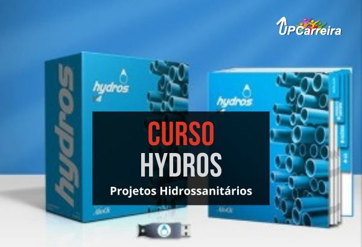

Curso Hydros Online Completo - Curso de Projeto Hidrossanitário
Curso Hydros Online Completo para Projetos Hidrossanitários, Hidráulicos, Gás e Incêndio Online na Prática Completo com Certificado
Ganhe Dinheiro com Projetos Hridrossanitários através do Software Hydros.
Aprimore seus conhecimentos/habilidades com Ajuda de Engenheiro Especialista.
Se você é profissional formado, autônomo, recém-formado, estudante, e necessita de uma formação completa em software para projeto hidrossanitário para dar um UP em sua Carreira.
"Ótimo curso. Principalmente para pessoas que tem pouca experiência ou conhecimento em hidráulica."
FREDERICO BIANO DE ARCANJO - Engenheiro - ⭐⭐⭐⭐⭐
Objetivo do Curso

Aprenda mais Rápido de uma vez por toda como transformar uma tela em branco do seu Computador em projeto hidráulico/hidrossanitário/Gás/Incêndio
Nosso Engenheiro Bruno irá compartilhara sua Tela de Computador e lhe Mostrará em VideoAulas Passo a Passo na prática como fazer um projeto real:
Você Aprenderá a lançar um Projeto Completo do inicio ao fim assim como as principais ferramentas do software como colunas-tubulações, conexões e realizar a verificação dos elementos aos critérios das normas.
atricule-se Já. Estude com quem Está Há mais de 12 Anos no Mercado.
Conheça o Professor do Curso
Bruno Gabriel – Engenheiro Mecânico e Projeto Estrutural
Com vasta experiência na área de projetos estruturais, o Engenheiro Bruno é nosso instrutor principal do Curso Eberick. Ele possui mais de 10 anos de atuação em projetos de grande porte e é reconhecida por sua expertise no uso do Eberick para cálculos e dimensionamentos precisos.
Ao longo do curso, a Engenheiro Bruno Gabriel compartilhará seu conhecimento e suas melhores práticas, proporcionando a você uma formação de alto nível para se destacar na área de projetos estruturais.
Depoimentos de Alunos
"Quero aqui dar meu depoimento sobre o curso Hidros V4, que adquiri junto a UP Carreira, estava perdido e não sabia nem como começar a fazer um projeto, onde me foi requisitado, os projetos de Hidráulicos e pluvial, pra não perder a oportunidade e precisando trabalhar aceitei o desafio e comecei a procurar por cursos na internet. Até que achei alguns cursos mas nada que pudesse me ajudar pois, o projeto não era tão simples assim, era um Edifício de 16 pavimentos, foi onde encontrei o curso Hidros V4 na UP Carreira, ministrado pelo Ótimo professor Bruno Gabriel, onde me auxiliou com suporte, em tudo que eu precisei para dar andamento ao meu projeto. Recomendo o curso para quem quer aprender uma nova profissão nesse ramo da Engenharia. ocurso é Ótimo, dinâmico e de fácil entendimento. Grande Abraço."
Leonei José Martins - Engenheiro Civil - CREA SC 169927-4 - ⭐⭐⭐⭐⭐
"Ótimo curso."
Maurício Turati de Araujo - Engenheiro - ⭐⭐⭐⭐⭐
"Ótimo curso. Principalmente para pessoas que tem pouca experiência ou conhecimento em hidráulica."
FREDERICO BIANO DE ARCANJO - Engenheiro - ⭐⭐⭐⭐⭐
"muito interessante, bem didático."
EDUARDO SACCANI VESCOVI - Engenheiro - ⭐⭐⭐⭐⭐
Benefícios
- Aprender na Prática de uma vez por toda como transformar uma tela em branco em Projetos Hidráulicos/Hidrossanitários/Gás/Incêncio lucrativos.
- Aprender Hydros V4 com Engenheiro Especialista no Software
- 3 Anos de Acesso Vitalício ao Curso - Estude no seu Tempo e Ritmo quando e como quiser (Somente para Esta Turma)
- Ganhar mais de R$2.000 em Bônus em Cursos Complementares
Bônus
Bônus que valem mais de: R$ 2.000,00:
- Biblioteca Virtual: normas, planilhas, apostilas, cursos livres: 6 Sigma, Empreendedorismo, Gestão de Projetos, etc.
- 3 Anos de Acesso Vitalício ao Curso - Estude no seu Tempo e Ritmo quando e como quiser (Somente para Esta Turma)
Este bônus é uma oportunidade única e limitada!
Não deixe para depois o que você pode conquistar hoje. Adquira o Curso Hydros Online agora mesmo e assegure-se de não perder esse bônus excepcional. Sua carreira na Engenharia Civil merece essa valorização, e estamos aqui para garantir que você esteja preparado(a) para o sucesso.
🔥 Aproveite Agora e Garanta seu Bônus Exclusivo!🔥
Clique no botão abaixo e garanta seu acesso ao Curso Hydros junto com o bônus especial antes que ele se esgote. Esta é a sua chance de elevar seu conhecimento e suas oportunidades profissionais a um novo patamar. Não perca essa oferta exclusiva!
Certificado 120 Horas Aulas
O Certificado tem validade para fins curriculares, provas de títulos (verifique no edital do concurso), atualização e aperfeiçoamento PROFISSIONAL, respeitando a carga-horária descrita.
Com ele você pode:
- Completar horas extracurriculares na faculdade;
- Preencher exigências em concursos públicos; (verifique no edital do concurso, se o mesmo aceita Cursos Livres)
- Participar de progressão funcional;
- Provas de título;
- Ou até mesmo para ascensão profissional.
Cronograma do Curso Hydros Online
Você aprenderá passo a passo como fazer um projeto hidráulico/hidrossanitário de um galpão, onde serão demonstrados os lançamentos e usos das principais ferramentas disponíveis no software.
O lançamento é executado tanto para o projeto sanitário, quanto para o hidráulico, ensinando como realizar o lançamento de colunas-tubulações, conexões e realizar a verificação dos elementos aos critérios das normas.
Perguntas sobre o Curso Hydros Online
-
O que é o Software Hydros?
- R: O Hydros V4 é um software para a elaboração de projetos de instalações hidrossanitárias, incêndio e gás, com ferramentas que agilizam as etapas do projeto, gerando relatórios e detalhamentos de forma automática.
- É um curso online e os módulos são postados conforme um cronograma?
?
- R: Sim, é um curso online e os módulos foram gravados em videoaulas de acordo com o cronogramado do curso seguindo cada etapa da análise estrutural.
- Qual o prazo de acesso ao Curso Hydros Online? Pode fazer o download para backup?
- O Prazo de acesso ao curso por contrato é de 3 Anos de Acesso ilimitado a plataforma com videoaulas, arquivos do curso. Sobre o backup das aulas por questão de segurança dos dados e pirataria não temos essa modalidade para download.
- Como farei para assistir às aulas? Posso assistir em qualquer horário?
- Resposta: O Curso esta disponível 24 horas e 7 dias da semana por um período de 1 ano. Você pode assistir em qualquer horário e quantas vezes quiser. Matricule-se Já e Dê um UP em sua Carreira.
- Posso assistir mais que uma vez a mesma aula?
- Resposta: Sim pode assistir mais de uma vez a mesma aula, pode assistir quantas vezes você quiser num período de até 1 ano.
- Qual o período de tempo de cada aula?
- Resposta: Em média cada Aula tem de 5 a 10 minutos, tem aulas que tem mais tempo, depende do assunto e conteúdo da aula.
- O que são os bônus especiais da Up Carreira?
- Resposta: São Curso extras gratuitos que complementam a sua carreira como gestão, administração, etc e consultoria de carreira com dicas de empregos e indicação das melhores agências de emprego para o seu setor.
- Vocês prestam o serviço de Consultoria no Software?
- Atenção: Não prestamos serviços (consultoria e/ou implementação)! Nosso curso é destinado a estudantes e/ou profissionais que queiram aprender sobre o tema com o objetivo de adquirir uma base para o desenvolvimento de seus estudos.
- Quem é a Upcarreira? Vale a pena estudar na Upcarreira?
- Estamos no mercado há mais de 12 anos, já formamos mais de 10.000 alunos no Brasil e Exterior. – Possuímos professores e profissionais experientes e especializados, sendo a maioria em nível de pós graduação, estamos empenhados em repassar/transmitir ao aluno seus conhecimentos da maneira mais fácil e prática possível, buscamos levar o aluno a explorar melhor sua capacidade de aprendizagem, e assim, obter mais qualificação em seu currículo. – Se você busca por especialização, capacitação ou atualização profissional, saiba que estamos preparados para atender as atuais exigências do mercado de trabalho, através de cursos práticos que visam o aprendizado significativo, bem como a aplicação dos seus conceitos do dia a dia do profissional. – Nossa missão é fazer com que nossos alunos tenham uma formação ampla e completa em menor tempo, através de cursos especializados nas principais áreas de atuação do mercado de trabalho. – Nossa visão é garantir cursos de qualidade que auxilie pessoas, de diferentes classes sociais, níveis acadêmicos e perfis tais como: alunos universitários, profissionais, professores e melhor idade, a alcançar e solidificarem uma carreira de sucesso impactando o crescimento econômico da nossa sociedade. – Compromisso com a qualidade de ensino e aprendizagem de modo que nossa sociedade tenha um maior número de profissionais qualificados e gabaritados em diferentes áreas de atuação. Adquira nossos cursos e treinamentos e comprove a qualidade do nosso ensino. Procuramos sempre nos aperfeiçoar com a ajuda de nossos alunos, professores e colaboradores.
- Quando começo a estudar? Informações sobre a Liberação e acesso ao curso!
- Assim que o sistema confirmar o pagamento seu acesso ao curso (login e senha) será enviado via e-mail, automaticamente. Normalmente no cartão de crédito no mesmo dia e boleto bancário 1 dia útil.
- Todos os cursos oferecem certificados?
- Resposta: Sim, ao final de cada um dos cursos o aluno tem direito a um certificado. A quantidade de horas cursadas, são válidas como atividades complementares ou extracurriculares em cursos de nível superior.
- Quais as Formas de Pagamento? É seguro o pagamento?
- Resposta: Sim, os pagamentos em nosso site são seguro, temos o certificado de segurança SSL que você pode comprar com o cadeado no canto inferior direito do seu navegador e o link como https, sites com esse sistema estão criptografados, ou seja, ninguém tem acesso das suas informações pessoais e do seu cartão de crédito por exemplo, somente você e sua operadora de cartão. Trabalhamos também com as maiores empresas do setor, como o pagar-me e ead checkout, pagseguro, paypal que tem grande segurança em negócios digitais, seu pagamento fica retido e só será transferido para a nossa empresa após confirmação que entregamos o curso a você.
- Qual o tempo de Acesso? Não tenho tempo para estudar, como vou fazer?
- Resposta: Nosso curso fica disponível para o aluno 24 horas e 7 dias da semana por um período, veja na descrição do seu curso o tempo de acesso, temos acesso ilimitado ao cursos para consultas após o período contratado. você pode estudar e rever as aulas quando quiser. A falta de tempo não é para não fazer nossos cursos, pois não limitamos o seu acesso antes do período de acesso ao curso e também não o forçamos a fazer o curso quando você não pode.
- Em média qual o tempo vou conseguir me formar no curso?
- Pela nossa experiência e prática inovadora de ensino, a formação dos nossos alunos costuma ser entre 30 a 90 dias, porém temos alunos, que por estudarem 1 hora por dia, conseguiram concluir o curso em menos de 1 mês e isso foi e é possível, graças a nossa didática de ensino. Se você precisa se formar em pouco tempo, isso é possível, basta seguir nosso cronograma de ensino.
- Método de Ensino - Modalidade a Distancia (Nota Importante)
- NOTA: Nosso método de ensino é voltado totalmente para modalidade a distância, prevendo o interesse, a capacidade de adequação, o desempenho e a responsabilidade do aluno em se dedicar aos estudos, conforme sua necessidade, respeitando sua forma de aprendizagem, por esse motivo nossos cursos não são indicados para alunos/pessoas que não se adequam ao ensino a distância, ou que não tenham a capacidade de aprendizagem sem a intervenção de um educador/professor.
- Vou realmente aprender com o Curso?
- Todas as aulas dos nossos cursos foram elaboradas cuidadosamente, passo a passo e na prática, utilizando projetos reais, onde o aluno assiste o conteúdo, replica no software o que foi ensinado pelo professor e havendo dúvidas, ele pode rever as aulas quantas vezes for necessário, até a assimilação do conteúdo ensinado. Acreditamos, que os alunos que se empenham em praticar o que é ensinado pelo professor, são capazes de aprender o curso, temos como base os nossos alunos que já concluíram o curso, a grande maioria (quase 90%)* aprova o nosso método de ensino. Leia os depoimentos dos alunos no site e comprove. * Pesquisa realizada em 2017
- Como funciona o suporte? Como eu Tiro as Dúvidas no Curso?
- Resposta: No geral o curso gera poucas dúvidas, pois trabalhamos com o método de ensino totalmente na prática, porém caso haja alguma dúvida pertinente ao curso, possuímos um corpo docente formado por professores especialistas nas áreas que ministram os cursos, muitos deles são mestres e doutores. Temos um canal do aluno com um banco de dados com várias perguntas já respondidas por esses especialistas, o aluno poderá consultar as suas dúvidas diretamente neste canal e também sugerir aulas para melhoria do curso caso a sua dúvida não seja encontrada neste canal, ela será analisada e sendo aprovada entra como aulas extras de melhoria do curso dentro do canal do aluno. O aluno poderá fazer a pergunta direta na plataforma, fazer a pergunta para os seus colegas de turma no fórum de dúvidas e também pode consultar o canal do Aluno com as Faqs (Perguntas e Respostas). Nosso suporte e atendimento é um dos nossos diferenciais de mercado.
- Qual a garantia que tenho matriculando no Curso?
- Sabemos da qualidade do nosso curso, você pode comprovar isso através dos depoimentos dos nossos alunos e os webnários gratuitos na seção do site mini cursos e aulas disponíveis no site como exemplo do curso. A Lei do Arrependimento no artigo 49 da lei do consumidor não se aplica a treinamentos iniciados ou já realizados.